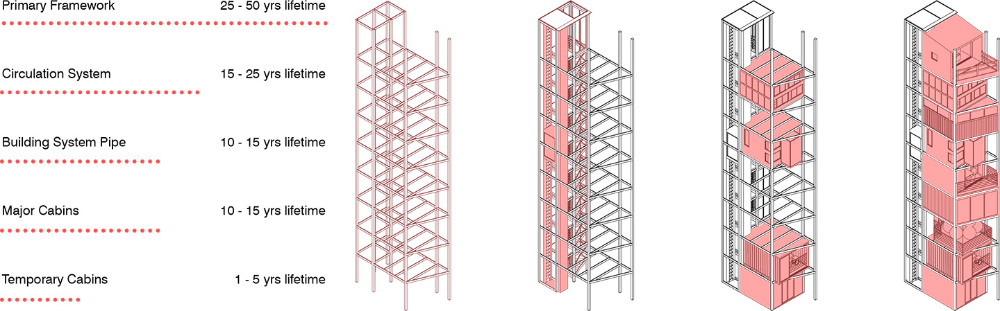
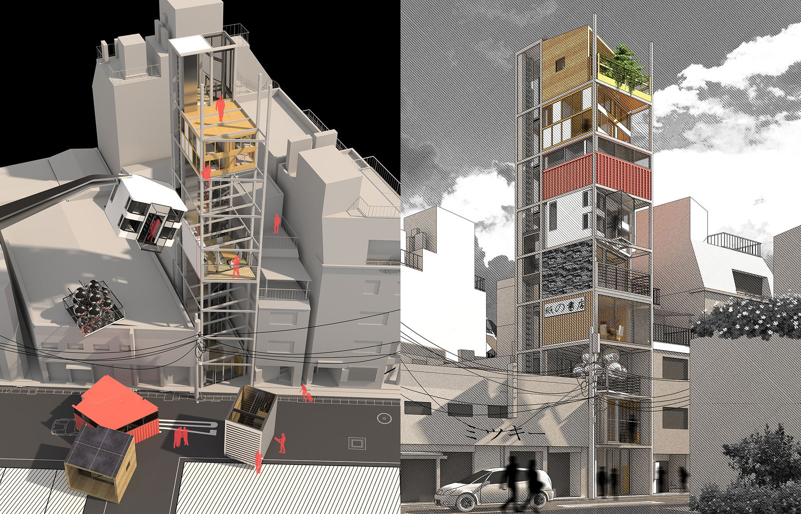
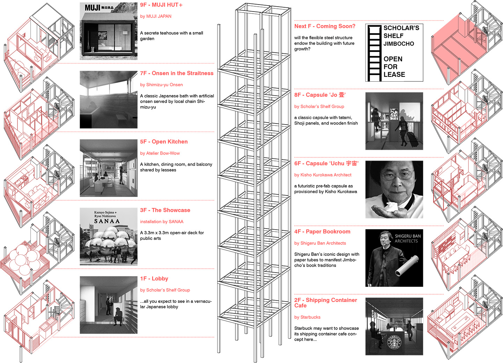
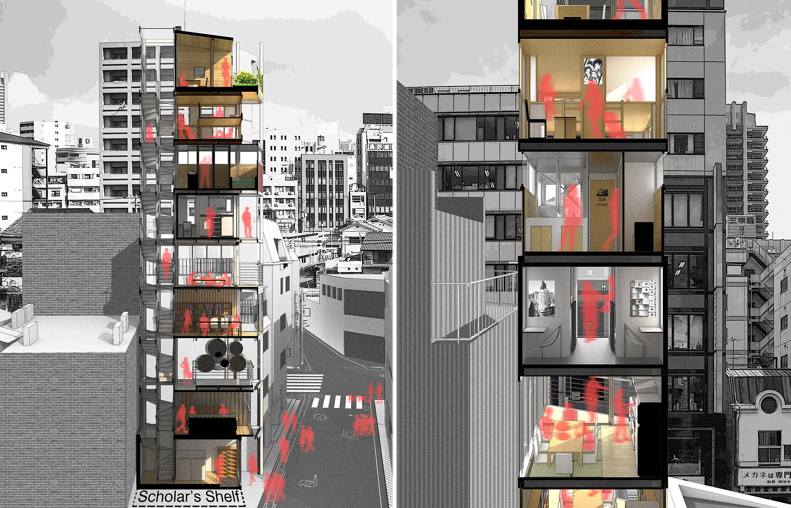

SCHOLAR'S SHELF
In a strictly ordered society, Japanese youth are used to live without disturbing others or being disturbed. On the other hand, many have to live collectively in order to take a share of the limited spatial and social resources. For the sake of satisfying individual needs while maintaining a harmonious mutual living environment, a mix-used building has to constantly respond to new demands. Incoming Jimbocho scholars need a bookshelf-like collection of urban amenities where up-to-date amenities present in replace of obsolete ones. As variable and adaptable as the characteristics of a vernacular pencil building, my Jimbocho Scholar’s Shelf is an architectural cabinet where programs constantly update to fulfill instant demands of visitors and tenants. It addresses both the elements of contemporary Tokyo urban life and evidence of former radical approaches from the 1960s' Metabolism Movements. The one-unit-per-floor paradigm of pencil building presents a promising design opportunity to revitalize the Metabolist concept of “permanent trunk” and “ephemeral leaves”



